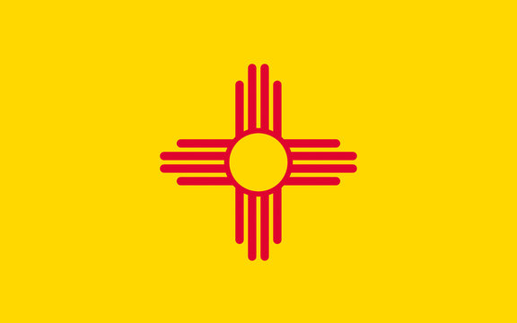

About Me
My name is Tanya Trampp. I lived most of my life in New Mexico. I am a stay-at-home mom. I have 6 children with ages ranging from 12-32. I homeschool my two youngest children. Bookkeeping is another job I have. My husband and I spend as much time together and with the kids as we can.
Kirtland, New Mexico

New Mexico is one of the Four Corner Region states, the south eastern most state. NM a heavily blended culture state, with large numbers of Native American, Hispanic, and Anglo. NM is one of the most southern Rocky Mountain state. New Mexico's elevation ranges from 2,842 ft and 13,161 ft above sea level, with the average being about 4,700 ft above sea level. New Mexico is well known for it's chile. A common question in NM is "Red, Green, or Christmas?".